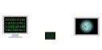
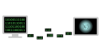

Part of: A Series of Unfortunate Assumptions
This assumption is a great example of something that seemed extremely reasonable, but just didn’t hold up. To state the assumption more clearly, it’s simply the following:
Assumption: a quantum algorithm taking an \(n\)-bit classical input should require at least \(n\) qubits of space.
This has got to be true, right? Well, let’s dig in by interrogating our mental models.
Suppose we want to take the discrete logarithm of an \(n\)-bit integer \(x \pmod{N}\). How is \(x\) actually input into the qubits?
In practice, a “quantum computer” is not entirely quantum, but is a system consisting of classical control hardware which interacts with the hardware qubits.
The simplest way we can imagine putting \(n\) bits of classical data into the qubits is to simply send it over the wire from the control hardware, loading it into \(n\) empty qubits:

In that case, we absolutely need \(n\) qubits. But this model of computation is certainly too simplistic. Depending on the algorithm, we may be able to stream the bits of the input to the quantum computer, only sending chunks of a few bits at a time:

If we can set things up correctly, perhaps the qubit count of the quantum computer can be as small as the size of the chunks of data it’s being sent—potentially much smaller than \(n\)! How to actually achieve this in a quantum algorithm is not immediately clear however. So let’s dig in.
Quantum streaming algorithms
Streaming is well-studied in both the classical and quantum literature, but it is typically considered as a limitation: if we are only allowed to see a few bits of our input at once, how does that affect the complexity of our algorithm? Our goal is to instead use streaming as a tool: what if we design a quantum algorithm that only needs to see a few bits of the input at once, so we never have to store the entire input in the qubits?
Here we’ll look at two places where this has proven possible, in the context of quantum discrete logarithm and factoring.
Special-form factoring with the Jacobi symbol
At STOC 2025, my coauthors and I presented a paper showing that certain special-form \(n\)-bit integers can be factored using a quantum computer with fewer than \(O(n)\) qubits. We manage to simultaneously achieve a circuit depth sublinear in \(n\), so the circuit is extremely compact overall.
Consider integers of the form \(N = P^2 Q\). Let \(n = \log_2 N\), and \(m = \log_2 Q\). We present a quantum circuit for factoring these integers with the following costs:1
- Gates: \(\widetilde O(n)\)
- Qubits: \(\widetilde O(m)\)
- Depth: \(\widetilde O(m)\)
Observe that for any \(m\) sublinear in \(n\), the qubit count will be smaller than the classical input.
So, how did we achieve this? Our algorithm applies quantum period finding to a mathematical object called the Jacobi symbol \(f(x) = \left( \frac{x}{N} \right)\), which for \(N=P^2 Q\) is periodic with period \(Q\). There’s a lot that went into actually making this work (see our paper), but the relevant part here is that we compute the function \(\left( \frac{x}{N} \right)\) in the following regime:
- \(x\) is a length-\(m\) quantum input
- \(N\) is a length-\(n\) classical input
The output (which is quantum) only takes on the values \(\{-1, 0, +1\}\), so conceivably everything quantum in the problem could be stored in only \(O(m)\) total qubits. But can we actually compute this function in such small space?
It turns out we can, by leveraging some of the nice mathematical properties of the Jacobi symbol. One very nice feature of the Jacobi symbol is that we can reduce the problem of computing \(\left(\frac{x}{N}\right)\) to the problem of computing \(\left(\frac{x}{N'}\right)\) where \(N' = (N-kx)/2^j\) for any integers \(j\) and \(k\). If we can find an \(m\)-bit \(N'\), then we can use existing circuits to compute \(\left( \frac{x}{N'} \right)\) using only \(\widetilde{O}(m)\) qubits and we’re done.
So, how do we find \(N'\)? The rough idea is to compute it in iterations, with the evolving intermediate values stored as a sort of hybrid integer, in which some bits are classical and some bits are quantum. In each iteration, we load \(m\) bits of \(N\) into the quantum computer, and then do a linear combination and power-of-2 division. That frees up \(m\) qubits to receive the next chunk of \(n\) bits. This is exactly the streaming that I mentioned above: \(N\) is only passed to the quantum computer in chunks of \(m\) bits. See our paper for the details, but here’s the idea as an animation:
Each time the blue block gets wider, that’s some of the classical bits (orange) getting loaded into qubits.
Space-efficient discrete log modulo \(N\) (and thus RSA factoring)
Unfortunately (or maybe fortunately, for the security of the internet), the Jacobi symbol trick doesn’t work for RSA integers. When \(N\) is an RSA integer \(N=PQ\), the period of the Jacobi symbol is \(N\)—so we wouldn’t learn anything interesting from doing period finding on it! But there are other tricks we can use.
In a breakthrough paper by researchers from INRIA (and a follow-up paper by Craig Gidney which reduced the gate costs substantially), it was shown that through the use of a mathematical tool called a residue number system (RNS), it’s possible to dramatically reduce the space needed to compute a discrete log over a multiplicative group of integers. In particular:
Recall the discrete log problem over a multiplicative group of integers, modulo \(N\): given \(n\)-bit integers \(g\), \(N\), and \(x = g^d \bmod N\), and a promise that \(\log_2 d < m\) for some \(m\), find \(d\).
Result (CFS24): there exists a quantum circuit to compute \(\mathsf{dlog}_g(x) = d\) using only \(m + o(m) + O(\log n)\) qubits.2
Let’s turn that over in our brains a little bit, because it’s actually pretty crazy that this is possible. We are handed three \(n\)-bit classical values, \(g\), \(N\), and \(x\), and asked to find an \(m\)-bit value \(d\) such that \(g^d \equiv x \pmod N\). The claim is that we only need roughly \(m\) qubits to do so, even though the problem is defined over a group of \(n\)-bit integers. What! How!
I’m not going to go into the “how” here, but it’s really cool, and I highly recommend reading the papers. What I do want to get into is the framing.
Because of the Ekerå-Håstad trick described in the previous post, this also reduces the cost of quantum factoring:
Corollary (CFS24): there exists a quantum circuit to factor \(n\)-bit RSA integers using only \(n/2 + o(n)\) qubits.
If you just take a quick glance at the papers I linked above, you would be reasonable to think that this is the result—or at least, that this is the only really interesting thing to draw from them. But we’ll see here that that is not the case.
Let’s forget about factoring for a minute, and think about how to adapt these results to the setting of a proof of quantumness. Since the qubit cost depends on the length of the exponent \(d\), what if we just make that exponent as small as we can?
It turns out we can push it pretty far, before \(d\) gets so short that the problem starts to become easy classically. Indeed, if \(n\) is 2048 bits, we can reduce the length of \(d\) to just \(225\) bits and still maintain the same level of classical hardness. What does this do to the cost of the quantum circuits? Let’s compare to the quantum costs of factoring and elliptic curve discrete log that we saw in the previous post:
| Problem | Logical qubits | Logical Toffoli gates |
|---|---|---|
Discrete log on curve secp256k1 |
~ 1200 | ~ 70 million |
| Factoring RSA-2048 | ~ 1400 | ~ 7,000 million |
| Integer d. log. with \(n=2048\), \(m=225\) | ~ 350 | ~ 70 million |
Holy crap, that’s crazy cheap! Good thing this isn’t a cryptographically relevant problem in practice like the other two, right?
… right?
Cryptography relying on the hardness of discrete log over multiplicative groups of integers has been included in cryptographic standards for years. See, for example, the TLS 1.2 standard in RFC 5246.
OK fine, but we tuned the parameters in a very particular way to make the quantum circuit as compact as possible. There’s no way that that precise tuning of parameters is what is used in practice, right?
Making the exponent short also makes things cheaper for genuine classical users of the cryptosystem—so indeed, it is standardized that you can (and should) set the exponent \(d\) to be short for efficiency. In fact, \(m=225\) is precisely what is recommended to pair with \(n=2048\), just as I have written above. (See e.g. RFC 7919).
Yikes. This is a pretty wild manifestation of Assumption 1. To summarize:
[CFS24] and [Gid25] give not only the cheap circuits for factoring described in their titles. They also give wildly cheap circuits for integer discrete log, a problem which is also standardized for use in cryptography!!
This fact seems to have been missed by essentially everyone not paying extremely close attention to these specific papers.
Summary
Assumption 2: input length is a lower bound on qubit count.
Surprisingly, quantum algorithms taking \(n\)-bit classical inputs don’t necessarily require \(n\) qubits. Conceptually, at a high level this is made possible by streaming the classical data to the qubits rather than loading \(n\)-bit values all at once.